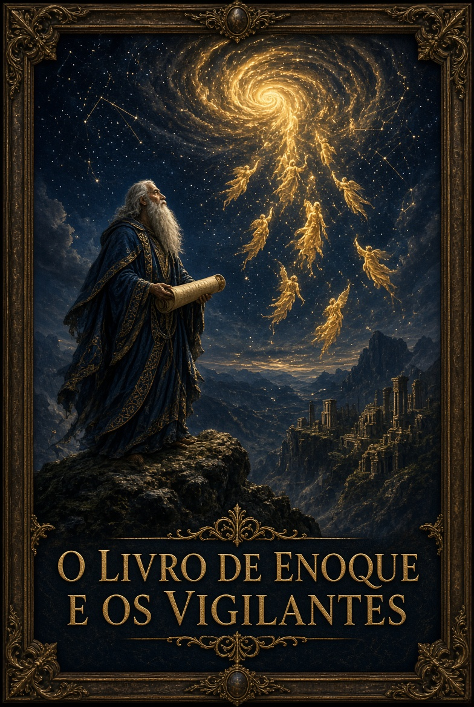
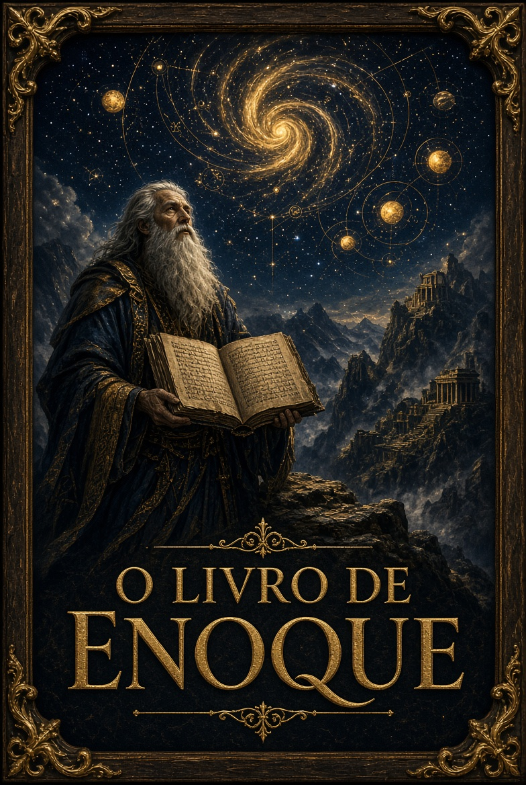
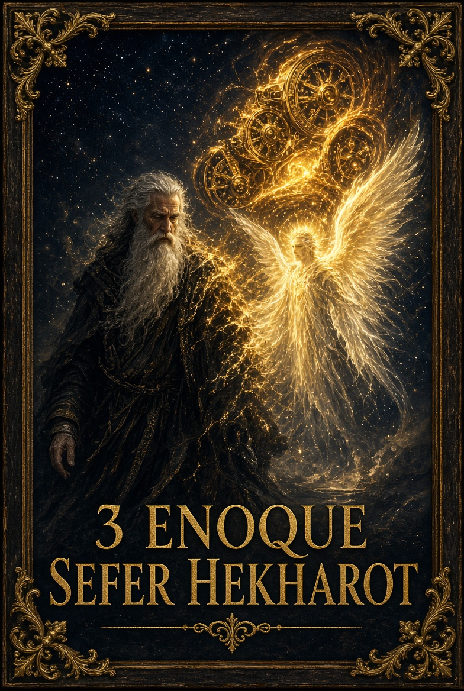
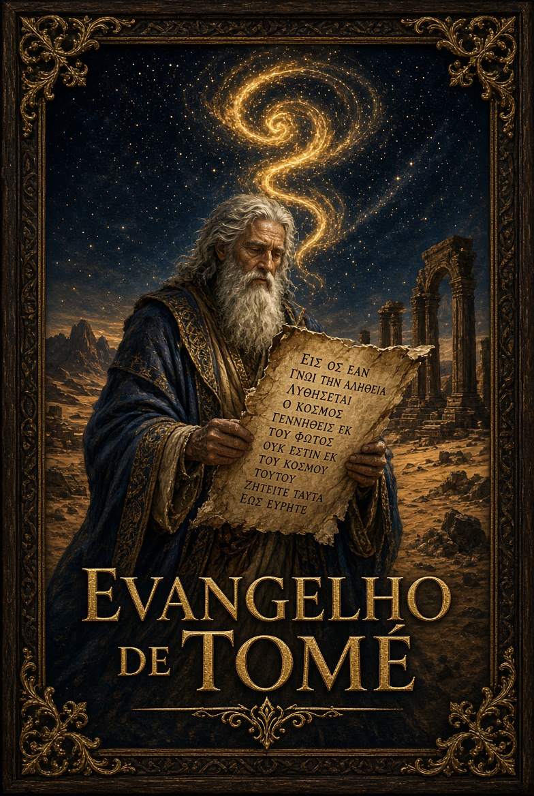
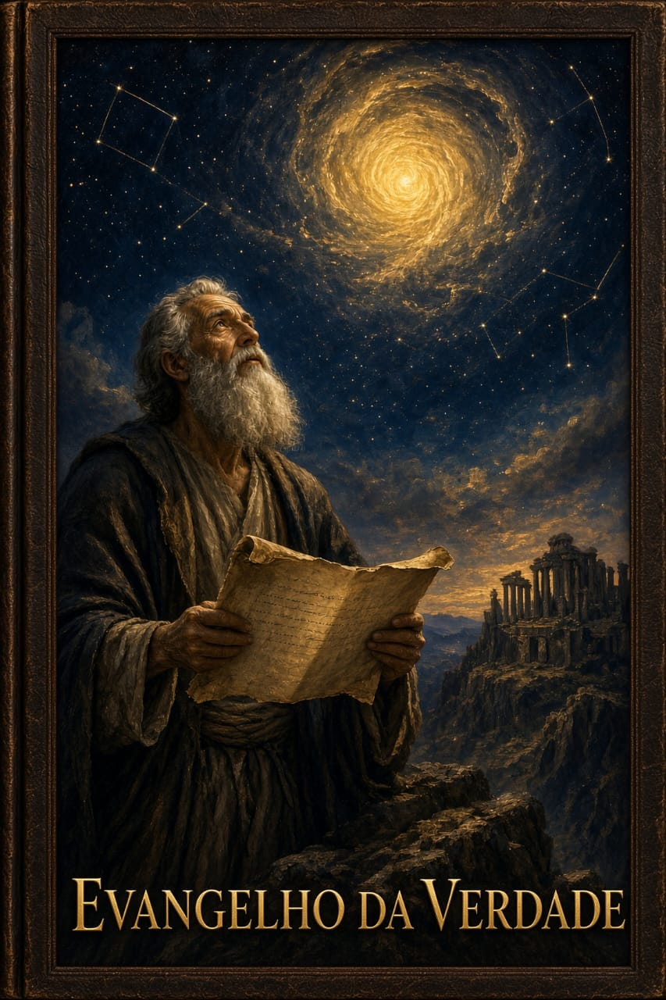

Apócrifos da História
Edição especial de luxo com a tradução integral dos capítulos 1 a 90. Narra a queda dos duzentos Vigilantes no Monte Hermom, as revelações apocalípticas de Enoque e os mistérios do cosmos.
Comprar – R$ 67,00
1 Enoque — Versão Etíope Completa
Texto integral dos capítulos 1 ao 108. Inclui o Livro dos Vigilantes, as Parábolas, o Livro Astronômico, as Visões Oníricas e a Epístola de Enoque. Edição formatada em duas colunas.
Comprar – R$ 117,00O Livro dos Segredos de Enoque
Texto apócrifo pseudepígrafo (2 Enoque / Enoque Eslavo). Relata a jornada de ascensão de Enoque através de dez céus e os segredos do cosmos. Edição especial formatada e comentada com o texto integral de 68 capítulos.
Comprar – R$ 67,00
3 Enoque — Sefer Hekhalot
Texto místico hebraico da literatura dos Palácios (Hekhalot) e da Merkabah. Relata a ascensão do Rabino Ismael, a transfiguração de Enoque em Metatron e os mistérios celestiais. Texto integral (capítulos 1 a 48 + apêndices).
Comprar – R$ 67,00
Apócrifo Espiritual
Coleção antiga de 114 ditos atribuídos a Jesus, descoberta em Nag Hammadi. Texto integral com introdução, notas e método de estudo. Reúne sentenças, parábolas e diálogos que convidam à reflexão espiritual.
Comprar – R$ 47,00Apócrifo Espiritual
Escrito cristão antigo fragmentário que preserva diálogos com o Salvador e um relato de visão transmitido por Maria. Texto integral com introdução, notas e método de estudo.
Comprar agora
Nag Hammadi
Reflexão espiritual sobre a ignorância humana, a revelação de Jesus e o retorno à origem divina. Edição expandida com exploração completa dos manuscritos de Nag Hammadi.
Comprar agoraOs anos me ensinaram, que os melhores ensinamentos, estão nos livros, nas leituras e estudos! Assim chegamos, ao nosso, DEUS, interno!
Igilio L. J. compartilha conhecimentos através da escrita e do estudo constante.
Dúvidas ou pedidos? Entre em contato: